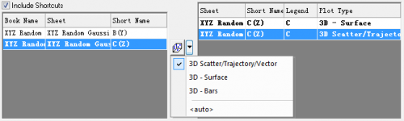

In dieser Lektion erfahren Sie, wie Sie 3D-, Kontur- und Profildiagramme zeichnen. Daten für diese Zeichnungen können in XYZ-Spalten oder einer Anordnung von Zellen in einem Arbeitsblatt oder Matrixfenster vorliegen.
 |
Sie können mehrere horizontale, vertikale oder beliebige Linien über die Schaltflächen in dem Dialog hinzufügen. Die Diagrammlayer zeigen überlagerte Kurven für die Profile in den geeigneten Layern an. Profildiagramme können auch aus den Daten in einer Matrix oder einem Arbeitsblatt erstellt werden. |
|
Der Importassistent kann verwendet werden, um eine ASCII-Datei zu analysieren und Variablen aus den Headerzeilen zu extrahieren. Die Datei, die Sie bereits gewählt haben, hat eine vordefinierten Filter, der angewendet wird, wenn Sie auf die Schaltfläche Fertigstellen klicken. |
|
Daten aus verschiedenen Matrizen oder virtuellen Matrizen können in dem gleichen 3D-Diagrammlayer gezeichnet werden, indem für jede ein angemessener Versatzwert festgelegt wird. Weiterhin muss festgelegt werden, welche Datensätze flach angezeigt werden sollen. Dies erlaubt das gemeinsame Untersuchen von verwandten Daten in dem gleichen Diagramm. |
|
Eine parametrische Funktion kann zu einem bestehenden Diagramm hinzugefügt werden. So ist es möglich, Zeichnungen wie diese mit realen Daten zu kombinieren. Besuchen Sie die Galerie der 3D-Funktionen, um weitere Beispiele anzuzeigen und herunterzuladen. |
Speichern Sie Ihre Projektdatei.